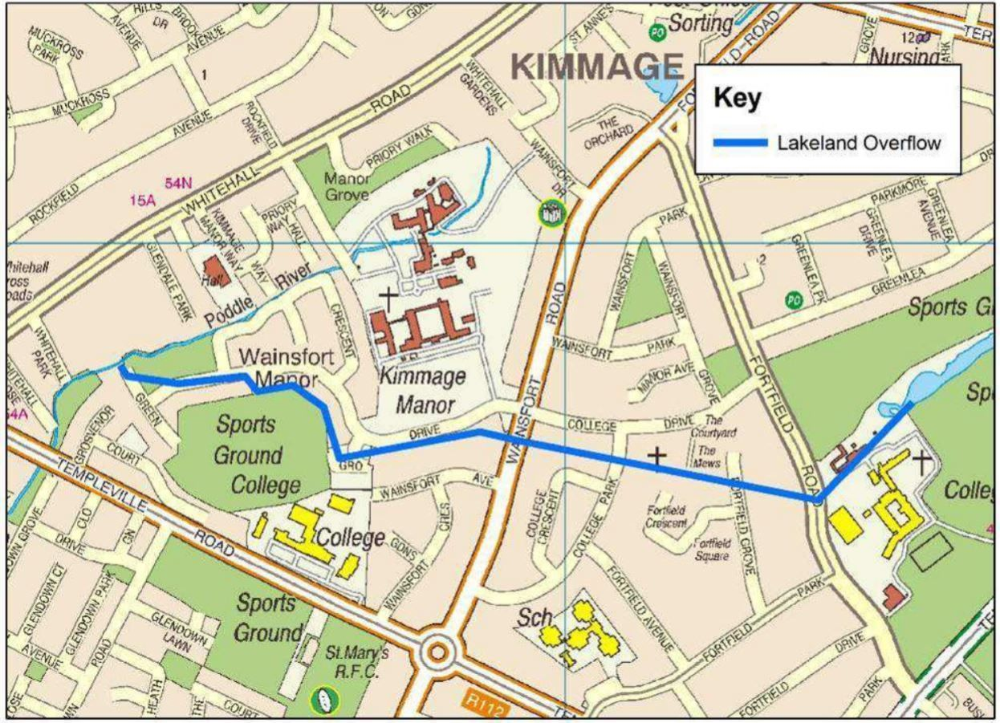
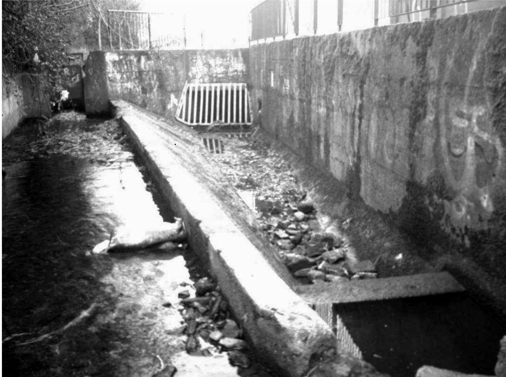

Stop 6 of 16 · Lakelands, Terenure
Dodder Overflow
A sluice that sends flood water back to the Dodder.
Diversion
Upstream of Kimmage Manor, where the Poddle begins its first long run in culverts, the river divides twice. This is the first. Unlike the second, it sends high water out of the Poddle and into the Dodder catchment, by way of storage ponds in Terenure.
Overflow to Terenure
A sluice gate limits how much water carries on towards Kimmage and Kimmage Road Lower. The overflow runs through culverts to the ponds at Terenure College, which drain back to the Dodder at Bushy Park.
An old record of the City Watercourse says a stream taken off it in Terenure fed three fishponds, so the idea of ponds there is an old one. You can follow the overflow on the map page, where it is drawn as a green dashed line from the sluice at Whitehall Park to Bushy Park. The line is schematic, since the culverts are underground.
This is the downstream end of the flow controls and channel works in the River Poddle Flood Alleviation Scheme. The scheme followed serious floods in Harold’s Cross and Kimmage in 1987, 1990, 1993 and 2011. It was approved by An Bord Pleanála in June 2023, the Office of Public Works began building it in April 2024, and it is due to be finished in 2027.
Refined and defined
Along this stretch, the scheme proposes to tidy and define the channel and build walls on both sides.
Flows through the Poddle in earlier centuries must have been large, without the ponds at Tymon or these control structures, and with water diverted in from the Dodder at Balrothery as well.
Watch and read

